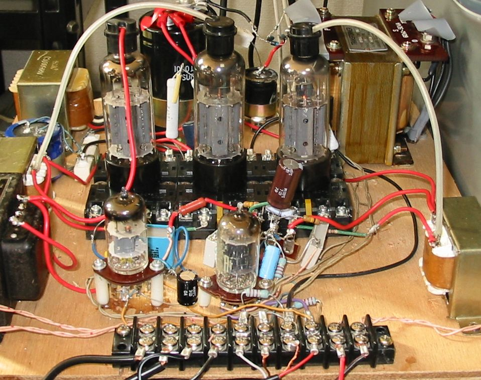

12GB3を使ったアンプの改造
12GB3という球は日本ではベストセラーの水平出力管で、今でもごく安く出回っています。
トッププレートということをのぞいて、小型で使いやすいので、3結シングルアンプを作ったわけですが、
あまりにも平凡で火を入れるチャンスが少なくなっていました。
そこで今回サブウーファー用にchを増設し、ちょっと遊んでみました。
3chとも12GB3の3結です。サブウーファー用のchは、両chの信号を取り込むために、12AX7/12AT7で
前段増幅器兼ミクサーを構成しています。
ステレオ側は低音はほとんど必要なくなったのでOPTを小型化してスペースを確保しました。
なかなかいい感じで鳴っています。仕事をしながらのバックグラウンドミュージック用としては十分です。

2010/12/07
その他実験結果のページに戻る